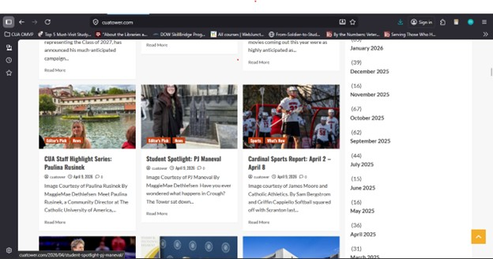
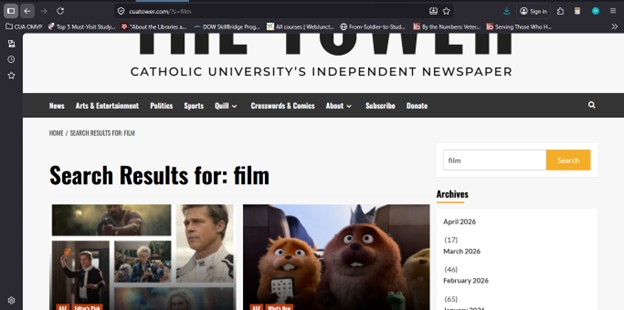
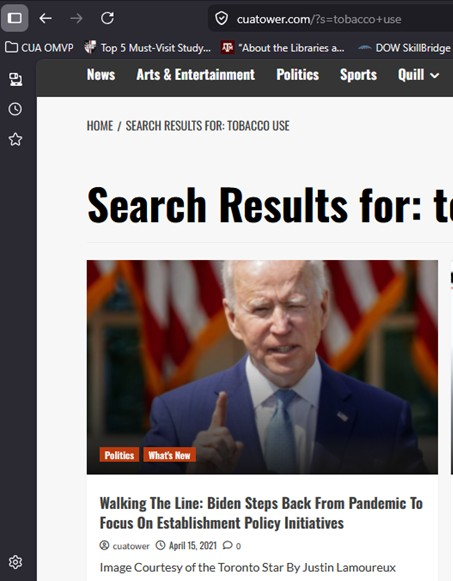

| Input | Corresponding Output |
|---|---|
| Click hyperlink (e.g. a link about lacrosse in article about CUA athletics) | New webpage (e.g. sent to webpage about lacrosse at CUA) |
| Hover over tabs (headings at top of page) | Reveals list of sub-headings |
| Click menu icon (e.g. clicking menu icon shown in bar at top of the page when the page width is compressed) | Reveals hidden menu options (e.g. reveals headings as a vertical list: News, Arts & Entertainment, Politics etc.) |
| Type query into search box and press ENTER button on keyboard or click search icon (e.g. typing and entering Super Mario into search box). | Retrieves search results of articles (e.g. the output for searching Super Mario is 10 articles: 3 great results – search terms were found in article title; 4 related results – similar subjects to search term (articles mentioned other video games or cartoon characters); 2 slightly related results – subjects/titles of articles related to video games or games in general; 1 poor result – subject/title related to Pope Francis death in May 2025. |
From the perspective of supporting undergrad teachers who want to incorporate material on tobacco use into their lesson plans or activities. I completed several searches using the search box with these related terms:
The aforementioned search terms yielded the following article as the most relevant results between 2019 and 2022: The War on Electronic Cigarettes (Van Lew, 2019).
Analysis of "The Tower" website using the ten heuristics outlined by Nielsen (1995):
The top 2 strengths of this system are “user control and freedom” and “recognition rather than recall”. In terms of user control and freedom, it is easy to navigate to the top of a webpage using the icon that appears in the bottom right hand corner after proceeding down the webpage (a yellow box with an upside-down “v” ) and also simple to navigate back to the homepage if one loses one’s place or wants to browse by using the cursor to click on the top heading, The Tower.

When using the search box, one does not have to recall the search term used, it appears at the top of the list of the search results “Search results: [search term]” as well as in the search box.

The top 2 weaknesses of the system are the lack of error prevention and a lack of help and documentation. After running several searches, I realized that targeted single word searches are more accurate than keywords, when performing searches in the search box. Without error prevention functionality such as auto suggestion or help and documentation, especially concerning how to retrieve the most accurate search results.
The similarities between the heuristic analysis and the mini-usability test are that searches using two or more keywords did not lead to the desired result. When I tried to search for tobacco use, that search did not yield relevant results concerning tobacco. Next, when I tried to search “tobacco use” that search was too narrow and yielded no results. I receive the best search results for tobacco use by searching for single keywords related to tobacco use i.e. tobacco, nicotine, cigarette, vaping and smoking. The volunteer also had difficulty searching for results on the Vietnam War and World War 2 (or World War II). The search using the search box seem to yield results related to parts of the term like war (one of the top results was concerning the Russian-Ukraine War) and world (another of the results was about the World Cup).
Some differences between the heuristic analysis and the mini-usability test arose because of the difference in the tasks assigned to me as reviewer and the tasks I administered as observer. The volunteer accessed the archives from 2015 and observed a blue status bar during a delay of several seconds. This satisfied the heuristic requirement for visibility of system status while possibly indicating a need for an accelerator to increase efficiency of use. The volunteer did not successfully find two articles for campus attitudes and activities for World War II and the Vietnam War, and I did not find many relevant articles concerning tobacco use between 2019 and 2022. I believe that adding relevant metadata or tags to the articles will increase satisfactory search engines results. I also noticed that the articles in the search results were tagged with useful categories such as “health and lifestyle” (which would have been useful for my search concerning tobacco us) and “what’s new” but I was not able to search or browse by these categories. “Politics” was available as both a category and a heading but perhaps the website can be reorganized to sort by category or add the categories as headings or subheadings (see Figure 3).

Catholic University of America. (2026, April 10). The Tower. https://cuatower.com
Nielsen, J. (1995). Ten Usability Heuristics for User Interface Design.
Van Luew, Kathy. (2019, November 1). The War on Electronic Cigarettes. https://cuatower.com/2019/09/the-war-on-electronic-cigarettes/